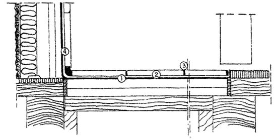

КОМПЛЕКС ПЕРСПЕКТИВНОГО РАЗВИТИЯ г. МОСКВЫ
УПРАВЛЕНИЕ ВНЕБЮДЖЕТНОГО ПЛАНИРОВАНИЯ РАЗВИТИЯ ГОРОДА
УПРАВЛЕНИЕ РАЗВИТИЯ ГЕНПЛАНА
НИИМОССТРОЙ
ВЕДОМСТВЕННЫЕ
СТРОИТЕЛЬНЫЕ НОРМЫ
ИНСТРУКЦИЯ
ПО ТЕХНОЛОГИИ УСТРОЙСТВА
ГИДРОИЗОЛЯЦИИ И УКРЕПЛЕНИЯ
СТЕН, ФУНДАМЕНТОВ, ОСНОВАНИЙ
ПОЛИМЕРНЫМИ ГИДРОФОБИЗИРУЮЩИМИ СОСТАВАМИ
ВСН 64-97
МОСКВА 1997
"Инструкция по технологии устройства гидроизоляции и укрепления стен, фундаментов, оснований полимерными гидрофобизирующими составами" разработана НИИМосстроем (к.т.н. Б.В. Ляпидевский, к.т.н. А.Ф. Ландер, ст. научный сотрудник Т.А. Клейман).
При пользовании настоящей инструкцией следует учитывать утвержденные изменения, вносимые в стандарты и технические условия на материалы, применяемые для гидроизоляции и укрепления стен, фундаментов, оснований полимерными гидрофобизирующими составами.
|
Комплекс перспективного развития г. Москвы |
Ведомственные строительные нормы |
ВСН 64-97 |
|
|
Инструкция по технологии устройства гидроизоляции и укрепления стен, фундаментов, оснований полимерными гидрофобизирующими составами |
Вводится впервые |
||
|
Управление внебюджетного планирования развития города |
|||
|
Управление развития Генплана |
1.1. Настоящая инструкция предназначена для руководства при устройстве гидроизоляции и укрепления конструкции стен, фундаментов и оснований реконструируемых зданий полимерными, гидрофобизирующими составами (ГУ-412э; ГУИ-412э; Аквафин-Ф; Аквафин-1К; Аквафин-2К; Аквафин-СМК). Схема механизма водопоглощения приведена на рис. 1.1.
1.2. При производстве работ, указанных в п. 1.1., необходимо соблюдать требования СНиП 3.04.01-87 "Изоляционные и отделочные покрытия" и настоящей инструкции.
1.3. Полимерные составы, предлагаемые для гидроизоляции и укрепления конструкций из кирпича, камня, бетона, представляют собой композиции на основе гидрофобизирующих кремниевых соединений.
1.4. Составы, предназначенные для гидроизоляции и укрепления конструкции стен и фундаментов, должны быть проверены на соответствие техническим требованиям, указанным в настоящей инструкции.
1.5. Полимерные составы поступают на строительные объекты готовыми к употреблению.
1.6. До начала работ по гидроизоляции и укреплению конструкций должны быть закончены подготовительные работы.
1.7. При производстве работ по гидроизоляции полимерными и полимерцементными составами необходимо соблюдать требования СНиП III-4-80* "Техника безопасности в строительстве" и настоящей инструкции.
|
Внесены НИИМосстроем |
Утверждена "15" июля 1997 г |
Дата введения в действие |
|
"1" января 1998 г |
Рис. 1.1. Схема механизма водопоглощения
Водопоглощение в жидкой форме:
1 - дождевая вода; 2 - фильтрационная вода; 3 - поднимающаяся влага;
Водопоглощение в форме водяного пара:
4 - капиллярная конденсация; 5 - гигроскопическое водопоглощение; 6 - конденсация
Выполнение работ разрешено при следующих условиях:
- температура наружного воздуха должна быть не ниже +5°С;
- с наружной стороны стены должны быть отморожены не менее чем на половину их толщины, что достигается выдерживанием при устойчивой круглосуточной температуре +8°С в течение 5 суток подряд.
Запрещается выполнение работ по покровной гидроизоляции:
- в жаркую погоду при температуре воздуха в тени +27°С и при прямом воздействии солнечных лучей;
- во время дождя и непосредственно после дождя по поверхности, не впитавшей воду;
- при ветре, скорость которого превышает 10 м/сек.
Гидроизоляцию внутренних поверхностей допускается производить в помещении при температуре не ниже 10°С и относительной влажности воздуха не более 80%.
2.1. Перед началом работ по гидрозащите и укреплению конструкций частей зданий и сооружений инъекционными и покровными способами необходимо:
- тщательно осмотреть поверхность изолируемых конструкций;
- расчистить все дефектные места (трещины, выбоины, несвязанные раствором места);
- обрабатываемая поверхность должна быть чистой, прочной, очищенной от остатков мазута, гудрона, цементного раствора, масляных и жировых пятен, затиров от резины, затеков и т.д.;
- по возможности поверхность следует обработать скребками или пескоструйным аппаратом;
- обладающие впитывающими свойствами поверхности необходимо равномерно обильно смочить водой, избегая образования луж;
- поврежденные места (сколы, раковины, трещины и т.д.) затирают полимерцеметным раствором из сухой смеси марки не ниже 75, затворяемой вяжущей эмульсией Асопласт-МЦ. (Асопласт-МЦ - синтетическая эмульсия на бутодиене и стироле - придает застывшему раствору повышенное сцепление, повышает эластичность и стойкость к размоканию, снижает водопроницаемость, увеличивает химическую стойкость).
2.2. В случае немедленной гидроизоляции увлажненных мест поверхностей, мест протекания и просачивания воды в подвалах, шахтах и т.д. используется уплотнительный цемент ФИКС-10с.
2.3. В случае необходимости устройства в наружных стенах здания горизонтальной гидроизоляции необходимо обеспечить доступ для установки инъекторов и инъецирования по всему периметру здания (снаружи и изнутри).
2.4. Русты и трещины в стенах и перекрытиях должны выполняться полимерцементным составом с применением сухой смеси с Асопластом-МЦ и последующим выравниванием.
Места примыканий разнородных материалов необходимо проклеивать марлей на 50%-ной поливинилацетатной пластифицированной (содержащей дибутилфталат ГОСТ 18992-80) дисперсии, разбавленной водой 2:1 или клеем Унифлекс-Б.
Марля должна быть тщательно разглажена, не иметь складок, вздутий и после высыхания клеевого слоя не отслаиваться от поверхности.
- для прекращения капиллярного впитывания путем создания горизонтального заслона при работах по ремонту старых зданий;
- для ликвидации пустот и раковин;
- для ликвидации неплотностей в бетоне, если имеются различного рода крепления (анкеры, консоли, выступающие опоры, гильзы и др.);
- для замоноличивания пазух в подземных сооружениях, заполненных щебнем, кусками бетона, строительным мусором или комковидным грунтом;
- для нагнетания смеси при строительстве тоннелей в трещиноватых скальных грунтах за оболочку тоннеля для заполнения свободного пространства;
- при некачественном замоноличивании стыков сборных конструкций;
- в тех конструкциях, где бетон не был достаточно уплотнен и в нем имеются отдельные гравийные прослойки и неплотные рабочие швы;
- при нарушениях кирпичной и бутовой кладки, которые возникают при неравномерных осадках фундамента, при отсутствии надлежащей перевязки швов и некачественном их заполнении;
- для заполнения пустоты для предотвращения коррозии металла, ликвидации просачивания воды;
- с целью придания монолитности конструкции и повышения ее прочности;
- для заполнения пор при пористой структуре бетона;
- при наличии глубоких трещин, распространенных на всю толщину конструкции.
Состав должен удовлетворять следующим требованиям:
- обладать гидроизолирующим свойством для прекращения капиллярного подсоса;
- быть стойким к действию водорастворимых солей;
- быть стойким к действию агрессивных веществ;
- обладать хорошим сцеплением с кладкой или бетоном;
- принятое давление не должно нарушать прочность конструкции и вызывать какие-либо ее деформации.
- представляет собой гидрофобизирующий и укрепляющий растворы, состоящие из смеси эфиров кремниевых кислот с растворителями с разбавлением и гидрофобный - на основе ГКЖ-11э с растворителем и разбавлением - двухкомпонентный для инъекционной гидрофобизации;
- предназначен для консервации строительных материалов, структурного укрепления и объемной гидрофобизации неорганических пористых материалов, а также для наружных и внутренних работ (инъекционная гидроизоляция);
- выпускается согласно технологическому регламенту, утвержденному в установленном порядке;
- по физико-химическим показателям должен соответствовать требованиям и нормам, указанным в табл.
|
Наименование показателя |
Норма |
Метод испытания |
|
1. Внешний вид |
Однородная прозрачная жидкость без механических примесей |
Визуально |
|
2. Цвет по йодометрической шкале, мг йода, не более |
6 |
ГОСТ 19266-79* |
|
3. Гидрофобизирующая способность, ч, не менее |
3 |
ТУ 2312-008-04000633-96, п. 4.2. |
- готовится на рабочем месте в соответствии с ТУ 2312-008-04000633-96;
- мало токсичен и пожароопасен до пропитки;
- хранение: в стеклянной плотно закрытой таре по ГОСТ 9980.1-86* (срок хранения 1 год);
- транспортирование при температуре не выше +30°С;
- расход для инъекционной обработки на 1 шпур при 2-кратной заливке - 1 литр.
- готовый к применению раствор для силикатизации на основе гидрофобизирующих кремниевых соединений. При взаимодействии с известью образует нерастворимые, прекращающие капиллярный подсос химические соединения;
- предназначен для прекращения капиллярного впитывания при работах по ремонту старых зданий;
- гидрофобизирует и сужает или перекрывает капиллярную структуру в бетоне и каменной кладке;
- не вызывает коррозии арматурной стали;
- технические данные: основа - кремниевые соединения, жидкие; цвет - прозрачный; удельный вес - 1,2 г/см3;
- хранение: в теплом помещении в закрытых емкостях. Срок хранения 1 год;
- расход рассчитывается, исходя из впитывающей способности стены, по данным обработки пробного шпура.
- для инъецирования необходимо устраивать шпуры длиной не менее 2/3 толщины стены;
- при обработке стен толщиной более 1 м, а также в углах зданий следует располагать шпуры с обеих сторон.
- концентрат силиконовой микроэмульсии, приготовленный на основе силанов и олигомерных силоксанов;
- применяется для устройства горизонтальной гидроизоляции - заслона поднимающейся капиллярной влажности;
- технические данные: основа - силан/силоксан; цвет - прозрачный; удельный вес - 0,95 г/см3. Срок хранения 9 месяцев, хранить в теплом помещении;
- расход: 1,5 - 2 кг концентрата на 1 м2 площади поперечного сечения стены;
- не содержит растворителей, без запаха, не горюч, безвреден для здоровья.
- алюминатно-силикатное нетоксичное вяжущее;
- свойства:
самоуплотнение;
интенсивное расширение;
водонепроницаемость в зачеканенном состоянии;
легкость комкования и хорошее зачеканивание.
- технические данные: основа - глиноземистый расширяющийся цемент, портландцемент, глиноземистый цемент, асбест хризотиловый; цвет - серый;
- водоцементное отношение цементного теста 0,28 - 0,32;
- водонепроницаемость - через сутки должен быть водонепроницаемым;
- расход: 2 кг/л пустот.
- состоит из цемента и извести;
- предназначен для заполнения полостей в каменных стенах, особенно при создании горизонтального заслона.
- технические данные:
основа - раствор, содержащий цемент; цвет - серый; плотность в сухом виде - 0,9 кг/дм3; плотность в сыром виде - 2 кг/дм3;
- время работы с материалом - 1 час;
- расход: 2 кг/л пустот.
Принцип инъецирования состоит в следующем:
- под давлением в конструкцию вводятся специально составленные растворы (ГУИ-412э, Аквафин-Ф, полимерцементные);
- без давления (не менее 8 часов пропитки или под низким давлением вводятся составы ГУИ-412э, Аквафин-СМК, полимерцементные);
- эти специальные составы обеспечивают водонепроницаемость, укрепляют и восстанавливают конструкцию;
- после тщательного исследования определяют, какой вид применим к данной ситуации, и приступают к выбору материалов;
- все работы по уплотнению и гидрозащите конструкций зданий и сооружений, выполненных из кирпича, камня, бетона, железобетона, производятся при температуре не ниже +5°С без ограничения по показателям влажности и атмосферному давлению, при наличии приточно-вытяжной вентиляции (при работах в закрытых помещениях).
- при создании горизонтальной гидроизоляции в наружных и внутренних стенах гидроизоляционный материал гидрофобизирует и перекрывает капиллярное впитывание;
- для данного инъецирования применяются следующие способы:
1) инъекции под давлением составами на основе гидрофобизирующих кремниевых соединений.
Инъекции под давлением рекомендуется применять, если обрабатываемая кладка в значительной степени или полностью пропитана водой. Расположение шпуров рассчитывается в зависимости от типа и состояния кладки. Диаметр шпуров должен составлять 12 - 18 мм. Шпуры могут быть пробурены горизонтально или с углом наклона до 30°. Расстояние между центрами шпуров должно составлять 10 - 20 см. Длина шпура должна быть на 5 - 8 см меньше толщины стены. Для плотных, слабо или совсем невпитывающих кирпичных кладок необходимо применять двухрядное расположение шпуров. Для впитывающей кладки и природных камней следует бурить шпуры в камнях, а при плотной кладке - в швах (см. рис. 3.1.; 3.2.; 3.3.);
2) инъекции без избыточного давления для растворов на основе кремниевых соединений.
Шпуры для инъекций следует бурить с интервалом не более 15 см диаметром 30 мм и под углом от 45° до 30°. Длина шпура должна быть на 5 - 8 см меньше толщины стены.
Рекомендуется располагать шпуры в двух уровнях в шахматном порядке (см. рис. 3.3.; 3.4.).
Кладку с большими полостями, полыми кирпичами, трещинами или открытыми швами более 5 мм перед выполнением инъекционных работ следует заполнить материалами БУС или Асокрет-БМ. (рис. 3.5.).
Перед пропиткой из шпуров следует удалить буровой шлам.
При работе с материалом Аквафин-Ф шпуры перед пропиткой следует заполнить 0,1 % раствором известковой воды. Время пропитки составляет не менее 24 часов.
Рис. 3.1. Сверление отверстий в каменных конструкциях
Рис. 3.2. Схема гидроизоляции подвала
Рис. 3.3. Схема гидроизоляции подвала на объекте
Рис. 3.4. Схема гидроизоляции подвала
Рис. 3.5. Схема уплотнения отдельных негерметичных мест инъекции
Затем шпуры заполняются материалом БУС или Асокрет-БМ.
процесс инъецирования полимерцементной смеси состоит из трех операций:
1) подготовка скважин в теле конструкции для постановки в них инъекционных трубок.
2) установка и заделка трубок.
3) нагнетание смеси.
Подготовка заключается в расчистке и расширении места, где предполагается установить трубки диаметром 19 - 25 мм.
При этом удаляется слабый раствор и несцементированный гравий.
Количество подготовляемых скважин устанавливается рабочей схемой в зависимости от размера и распространения дефекта.
Глубина скважины пробуривается с таким расчетом, чтобы трубка входила в нее до 50 - 70 мм под некоторым углом, обеспечивающим хорошее отекание раствора в дефектный участок.
Расчистка раковин и расширение трещин производится ручным инструментом (скарпелем, шлямбуром и др.). Подготовленное место промывается (рис. 3.5).
При установке трубок необходимо следить, чтобы они точно попали на трещину или раковину, уходящую вглубь конструкции (рис. 3.6).
Инъекционные трубки заделываются цементным раствором состава 1:3 с осадкой конуса 2...3 см. Если раковина или трещина очень большие по сравнению с трубкой, то вокруг нее укладывается пропитанная жидким стеклом пакля, которая плотно зачеканивается.
Конец трубки должен выступать из тела конструкции на 50... 100 мм для крепления к ней шланга.
Заделанные трубки некоторое время выдерживаются с тем, чтобы раствор набрал необходимую прочность (рис. 3.6).
Цементная смесь приготавливается из цемента марки 400 состава 1:1,5 (1 часть цемента и 1,5 части воды по объему). Готовится смесь на рабочем месте в металлических бочках емкостью 40 - 60 л, тщательно перемешивается в течение 2 - 3 минут, процеживается через металлическую сетку, а затем поступает в насос. БУС или Асокрет разводится водой.
Рис. 3.6. Установка инъекционных трубок на трещине и закачивание раствора насосом
Инъецирование обычно осуществляют 2 человека.
Через установленные трубки или непосредственно в шпур под давлением 0,2 - 2,0 МПа нагнетаются "до отказа" инъекционные композиции.
Выдерживание в этом состоянии предельного давления в течение 5 - 10 мин.
После частичного отверждения инъекционной композиции трубки из конструкции извлекаются или срезаются заподлицо с поверхностью конструкции, а шпуры заделываются полимерцеметным раствором.
В зависимости от конструкции, характера разрушения, прочности материала и величины заглубления трубок назначается соответствующее давление для каждого отдельного случая. По мере насыщения скважины давление постепенно повышается до предельно установленного для данной конструкции и материала.
Принятое давление не должно нарушать прочность конструкции и вызывать какие-либо деформации. В процессе нагнетания наступает момент, когда скважина прекращает принимать раствор, а быстрый подъем давления указывает, что имеющиеся пустоты в конструкции заполнены и дальнейшее нагнетание следует прекратить.
Иногда нагнетание производят в несколько приемов с перерывом в одни сутки. Повторное нагнетание особенно целесообразно в подземных сооружениях, где могут быть пустоты за стенкой, а выходящий через сквозные трещины раствор создает наслоения и заполняет пустоты между конструкцией и грунтом.
Количество нагнетаемой цементной смеси в одну скважину зависит от объема конструкции, ее месторасположения, характера и размера дефекта и правильности постановки трубок.
Много смеси уходит при инъецировании подземных сооружений из-за отсутствия надлежащего уплотнения грунта, наличия в нем различных посторонних включений - строительного мусора, досок опалубки, смерзшихся комьев грунта и др. При этом раствор иногда распространяется на значительные расстояния от места цементации (рис. 3.5).
По окончании работ инъекционные пластмассовые трубки удаляются или путем срезки их заподлицо с конструкцией, или путем извлечения их из тела бетона, если после окончания инъецирования прошло не более 16 - 24 ч. Оставшиеся отверстия заполняются раствором.
- выбуриваются шпуры Æ 20 - 25 мм по оси трещин в дефектных зонах или по всей площади конструкции. Технология инъецирования, шаг, диаметр, глубина шпуров зависят от характера повреждения и определяются автором проекта на месте работ;
- при уплотнении материала конструкций (кирпич, камень, бетон, железобетон) с невыявленными дефектами принимается шаг шпуров из расчета 10 - 20 шт/м2 поверхности, а глубина шпуров - 2/3 толщины конструкции (рис. 3.5; 3.7);
- при создании горизонтальной гидроизоляции в наружных и внутренних стенах шаг шпуров принимается не более 150 мм, шпуры располагаются в два, три и более ряда в шахматном порядке со смещением по высоте 100 - 150 мм (рис. 3.2.; 3.3.; 3.4.);
- из шпуров удаляется буровой шлам любым способом;
- в отверстия шпуров устанавливаются металлические трубки (штуцеры длиной 10 - 15 см, которые укрепляются цементным или полимерцементным растворами. При плотном бетоне (камне) установка трубок необязательна, в этом случае инъецирование ведется с применением инъекторов;
- для герметизации трещин и в некоторых случаях (обычно при кирпичной кладке) поверхности конструкций с целью предотвращения вытекания инъекционных композиций из нее, а также выравнивания поверхности кирпичных или каменных конструкций (в случае последующего устройства окрасочной гидроизоляции) выполняется полимерцементная штукатурка толщиной 10 - 20 мм (рис. 3.8.).
- подготавливается оборудование для проведения инъекционных работ.
- подготавливаются инъекционные композиции.
Рис. 3.7. Устройство инъекционной и покровной гидроизоляции
- специальная технология НИИМосстроя включает в себя следующие технологические операции:
разметка мест сверления.
сверление отверстий,
установка в отверстия пластмассовых трубок,
замоноличивание трубок цеметным раствором - БУСом,
закачка или заливка в отверстие специальных составов, заполняющих микротрещины и поры в теле стены и фундаментов и защищающих от проникновения воды;
- наиболее трудоемкой и ответственной операцией является сверление глухих наклонных отверстий цилиндрической формы диаметром 18 - 25 мм глубиной до 1 м. Угол наклона отверстий и горизонтальной плоскости составляет ~25°, расстояние от пола ~100 мм. Отверстия располагаются в шахматном порядке, расстояние между ними по горизонтали и вертикали до 150 мм;
- наиболее эффективным средством выполнения отверстий является механизация этих работ с применением различных видов ручных перфораторов. Правильный выбор определяет оптимальные трудоемкость и качество выполнения отверстий;
- механический способ позволяет получать отверстия с помощью сверления, бурения, пробивки, резания материала строительной конструкции или сочетания этих способов, например ударно-вращательное бурение;
- из всех механических способов бурения отверстий наиболее эффективным является ударно-вращательный, так как износ РИ при таком бурении равен примерно средней величине износа при других способах (ударно-поворотном, вращательном);
- для выполнения отверстий диаметром 18 - 25 мм, глубиной до 0,1 м наиболее подходящими являются ручные электросверлильные машины тяжелого типа с диаметром сверления до 23 мм, такие как РН-38 фирмы АЕG, GВН 7/45 фирмы BOSCH, ВН45Е фирмы ЭЛУ, оснащенные спиральными сверлами, армированными твердым сплавом;
- сверла имеют универсальные хвостовики со шлицами, что позволяет использовать сверла различных зарубежных фирм.
Рис. 3.8. Схема укрепления стен
- рекомендуется общая последовательность технологических операций:
бурение и очистка отверстий,
первичное заполнение отверстий полимерцементным составом,
повторное выбуривание и очистка отверстий,
инъекции из рабочих составов ГУ-412э и ГУИ-412э,
повторное заполнение отверстий полимерцементным раствором;
- первичное заполнение отверстий полимерцементным составом выполняется после их очистки от бурового шлама. Заполнение и очистку отверстий от бурового шлама можно производить любым доступным способом (промывка, продувка, механическое удаление и т.д.);
- заполнение отверстий производится через трубки без избыточного давления ручным насосом рычажного типа, изготовленным специально для закачки цементных растворов, предварительно пропущенных через сито 0,63 мм. После заполнения, перед проведением дальнейших работ выдерживается технологическая пауза не менее одних суток;
повторное выбуривание отвержденного материала и очистка отверстий производится по прошествии не менее одних суток на всю глубину отверстия тем же по диаметру буром, что и при первичном бурении. Очистка производится промывкой, продувкой, механическим удалением и т.д.;
- инъекция рабочего состава производится после очистки шпуров от бурового шлама под давлением 0,1 - 0,2 МПа тем же насосом или многократной заливкой без давления до полного насыщения;
- время инъецирования под давлением обычно составляет 5 - 10 мин, запрессовка считается законченной, когда на внешней поверхности вокруг отверстия, в которое производится инъекция, становится заметен выступающий на поверхности рабочий состав в виде мокрого пятна округлой формы. Если так определить невозможно, то к поверхности приклеивается специальная градуированная стеклянная трубка и заполняется специальными составами, и по расходу этого состава определяется насыщение стенки;
- повторное заполнение отверстий полимерцементным материалом выполняется после проведения инъекций рабочим составом с выдержкой технологической паузы до полного насыщения.
При производстве работ по инъекционному укреплению и гидрозащите конструкций зданий и сооружений композициями на основе модифицированных составов необходимо соблюдать правила, предусмотренные главой СНиП III-4-80* "Техника безопасности в строительстве"; СН 245-71 "Санитарные нормы проектирования зданий и сооружений".
Следует систематически осуществлять контроль за состоянием воздушной среды в помещениях и концентрацией вредных веществ в рабочей зоне, не допуская превышения предельно допустимых концентраций (согласно санитарным нормам проектирования предприятий). Работы в помещениях можно осуществлять при наличии эффективной вентиляции подвальных помещений.
Рабочие перед допуском к самостоятельной работе должны пройти инструктаж по технике безопасности и пожарной безопасности.
Работающие с полимерными материалами и композициями, должны иметь спецодежду и индивидуальные защитные средства (хлопчатобумажные халаты, хлопчатобумажные костюмы и резиновые перчатки).
В случае попадания составов на кожу необходимо очистить участок кожи тампоном и промыть большим количеством теплой воды.
В помещениях должна быть обеспечена пожарная безопасность: предусмотрена система предотвращения пожара и система пожарной защиты.
К работе с пневматическими инструментами допускаются лица не моложе 18 лет, прошедшие специальное обучение и получившие удостоверение на право работы с этими инструментами, а также аттестованные по первой группе техники безопасности.
При возникновении неполадок в работе механизмов необходимый ремонт допускается производить только после их остановки, обесточивания и прекращения подачи сжатого воздуха.
Корпуса всех электрических механизмов должны быть надежно заземлены.
Составы применяются для гидроизоляции бетона, каменной кладки, штукатурки в подземных сооружениях (внутри и снаружи), очистных сооружениях, резервуарах с водой, плавательных бассейнах, теплоцентрали, шахтах, плотинах, шлюзах.
Покровные материалы должны:
обладать гидроизолирующим свойством;
быть стойкими к действию водорастворимых солей;
быть стойкими по отношению к агрессивным веществам;
обладать антисептическим действием;
обладать хорошим сцеплением с кладкой или бетоном.
Для устройства обмазочной покровной гидроизоляции применяются материалы на основе кремнийорганических соединений - ГУ-412э и на основе цементосодержащих покрытий - Аквафин-1К, Аквафин-2К и другие.
- представляет собой композицию, состоящую из смеси эфиров кремниевых кислот с растворителем без разбавления и гидрофобного состава на основе ГКЖ-Пэ без разбавления - двухкомпонентный для покровной гидроизоляции.
- предназначен для консервации строительных материалов, структурного укрепления и для покровной гидрофобизации неорганических пористых материалов, применяется для наружных и внутренних работ;
- выпускается согласно технологическому регламенту, утвержденному в установленном порядке;
- по физико-химическим показателям должен соответствовать требованиям и нормам, указанным в табл.
|
Наименование показателя |
Норма |
Метод испытания |
|
1. Внешний вид |
Однородная прозрачная жидкость без механических примесей |
Визуально |
|
2. Цвет по йодометрической шкале, мг йода, не более |
6 |
ГОСТ 19266-79* |
|
3. Гидрофобизирующая способность, ч, не менее |
3 |
ТУ 2312-009-04000633-96, п. 4.2. |
- Состав готовится на рабочем месте в соответствии с ТУ 2312-009-04000633-96.
- токсичен и пожароопасен до нанесения на поверхность.
- хранение: в стеклянной плотно закрытой таре по ГОСТ 9980-1-86*; срок хранения 1 год.
- полимерный состав транспортируют при температуре не выше +30°С.
- расход: для покровной обработки на 1 м2 - 0,5 л.
- цементосодержащий гидроизоляционный состав для нанесения на поверхности, содержит кварцевый песок, марочный цемент и добавки;
- поставляется в виде порошка и готовится в чистой емкости с добавлением необходимого количества чистой воды;
- путем размешивания доводится до консистенции, пригодной для работы кистями, щетками или разбрызгивателями и наносится на подготовленную поверхность;
- не содержит веществ, разрушающе действующих на арматуру и бетон.
- после твердения образует прочное жесткое покрытие.
Если на поверхности возможно появление трещин, то такие поверхности должны быть обработаны изоляционным средствами Аквафин -2К.
- эластичное гидроизоляционное покрытие, состоящее из трех весовых частей Аквафина-1К и одной весовой части Унифлекса-Б (жидкого эластификатора);
- затвердевшее покрытие Аквафин-2К противостоит негативному давлению грунтовых и стоячих вод и является достаточно эластичным для того, чтобы перекрывать "волосяные" трещины;
- применяется также для гидроизоляции поверхностей, покрываемых керамическими плитками (бассейны, резервуары для хранения воды и т.п.) и для террас, балконов, кровли и при реставрации старых зданий;
- в холодную дождливую погоду и при сильно увлажненных поверхностях следует предварительно положить грунтовочный связующий слой Аквафин-Ф и сразу же Аквафин-1К.
Примеры гидроизоляции подвалов фундаментов, подземных гаражей, балконов, под плитку и т.д. приведены на рис. 4.1; 4.2; 4.3; 4.5; 4.6; 4.7; 4.8; 4,9.
- для покровной гидроизоляции необходимо иметь чистую посуду, различные кисти, шпатели, перфоратор с насадкой для перемешивания материалов, разбрызгиватель;
Рис. 4.1 Гидроизоляция подвалов и фундаментов в новостройках:
1 - гидроизоляция стены; 2 - галтель; 3 - гидроизоляция под каменной кладкой; 4 - гидроизоляция основания
Рис. 4.2. Гидроизоляция подвалов изнутри в уже построенных зданиях:
1 - гидроизоляция стен; 2 - галтель; 3 - гидроизоляция основания
Рис. 4.3. Гидроизоляция под плитку. Капитальное строительство:
1 - гидроизоляция Аквафин-2К; 2 - приклеивание: Монофлекс; 3 - расшивка швов материалов АСО-Флексфуге; 4 - уплотнительная лента

Рис. 4.4. Гидроизоляция под плитку. Постройки из легких конструкций (в частности, старые постройки):
1 - гидроизоляция Аквафин-2К; 2 - приклеивание: Монофлекс; 3 - расшивка швов материалом АСО-Флексфуге; 4 - уплотнительная лента
Рис. 4.5. Гидроизоляция плавательных бассейнов:
1 - гидроизоляция Аквафин-2К; 2 - приклеивание Унификс-2К; 3 - расшивка швов Асодур-ЕК
Рис. 4.6. Гидроизоляция резервуаров:
1 - гидроизоляция поверхностей стен и пола; 2 - уплотнительная лента
Рис. 4.7. Подземные гаражи:
1 - уплотнительная лента; 2 - гидроизоляция Аквафин 2К; 3 - дренажный мат; 4 - фильтрованная ткань (защита от механических повреждений, экстенсивное озеленение)
Рис. 4.8. Осушение каменной кладки преимущественно в старых постройках:
1 - выравнивающая штукатурка; 2 - гидроизоляция поверхностей стен; 3 - нанесение санирующей штукатурки; 4 - дополнительная горизонтальная гидроизоляция
Рис. 4.9. Балконы и террасы. Гидроизоляция и ремонт:
1 - Аквафин-2К; 2 - Унифлекс -2К; 3 - Ескосил
- гидроизоляционное покрытие путем размешивания доводится до консистенции, пригодной для работы кистями, щетками или разбрызгивателями и наносится на подготовленную поверхность;
- при наличии на потолке, в стенах или проемах металлических изделий, на них перед штукатуркой тоже необходимо нанести гидроизоляционное покрытие. Для этого необходимо хорошо очистить (до блеска) металлическую поверхность вручную металлическими щетками или в трудных случаях - углошлифовальной машиной от ржавчины, окалины, масел, пыли, жира, краски и других загрязнений, которые могут действовать как разделительное средство между поверхностью и покрытием. После этого сразу же наносится кистью первое грунтовочное покрытие.
При производстве работ при покровной гидроизоляции конструкций зданий и сооружений композициями на основе кремнийорганических соединений необходимо соблюдать правила, предусмотроенные главой СНиП III-4-80* "Техника безопасности в строительстве", СН-245-71 "Санитарные нормы проектирования зданий и сооружений".
Следует систематически осуществлять контроль за состоянием воздушной среды.
Рабочие перед допуском к работе должны пройти инструктаж.
В случае попадания составов на кожу, необходимо очистить тампоном и промыть большим количеством воды.
Рабочие должны иметь спецодежду.
В помещениях должна быть обеспечена пожарная безопасность: предусмотрена система предотвращения пожара и система пожарной защиты.
СОДЕРЖАНИЕ